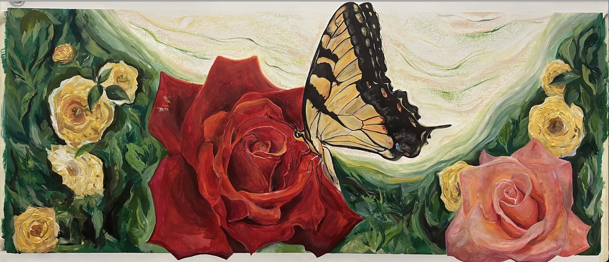
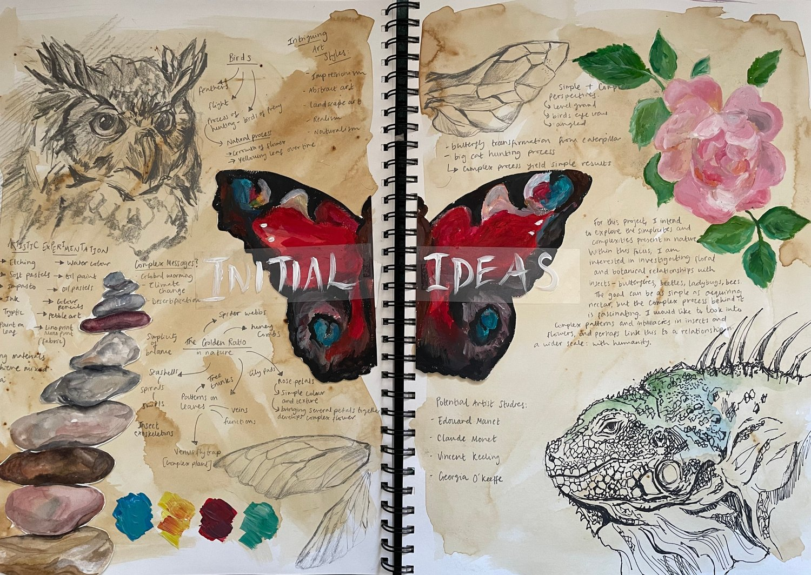
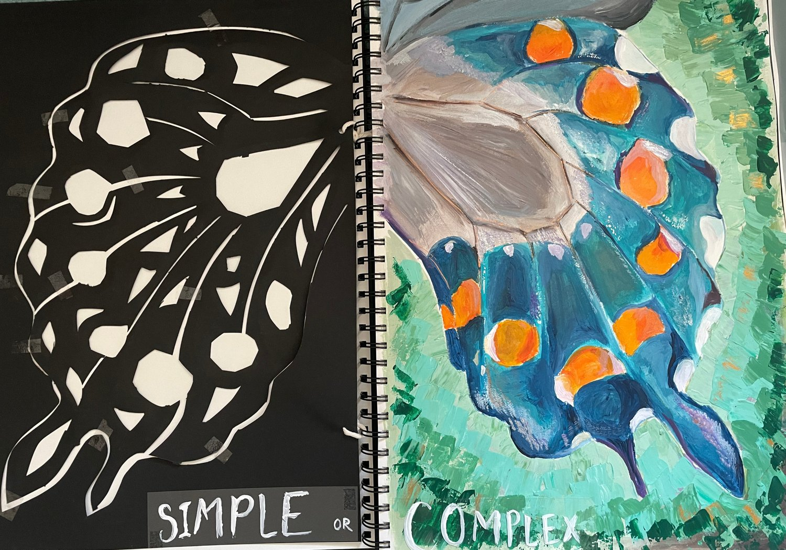
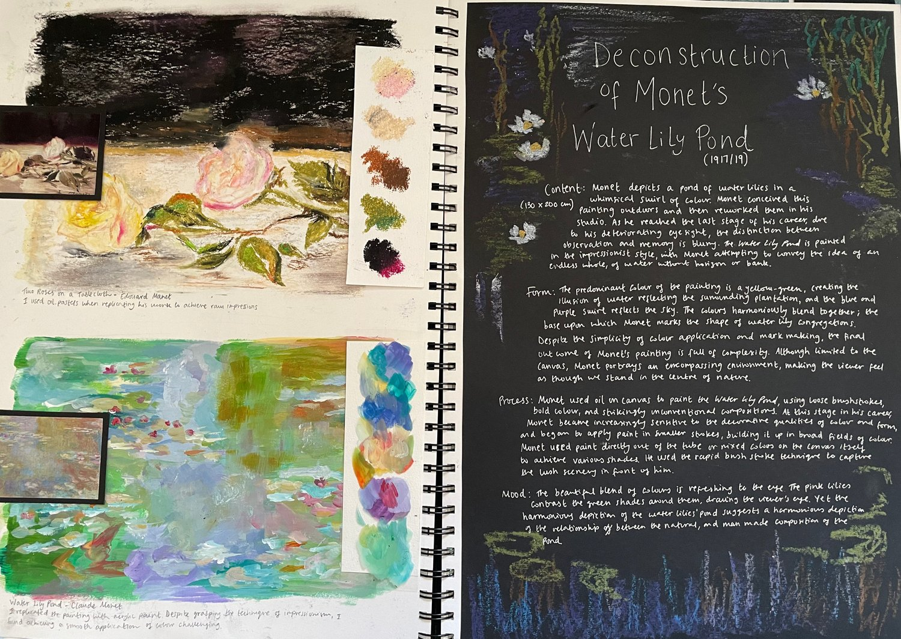
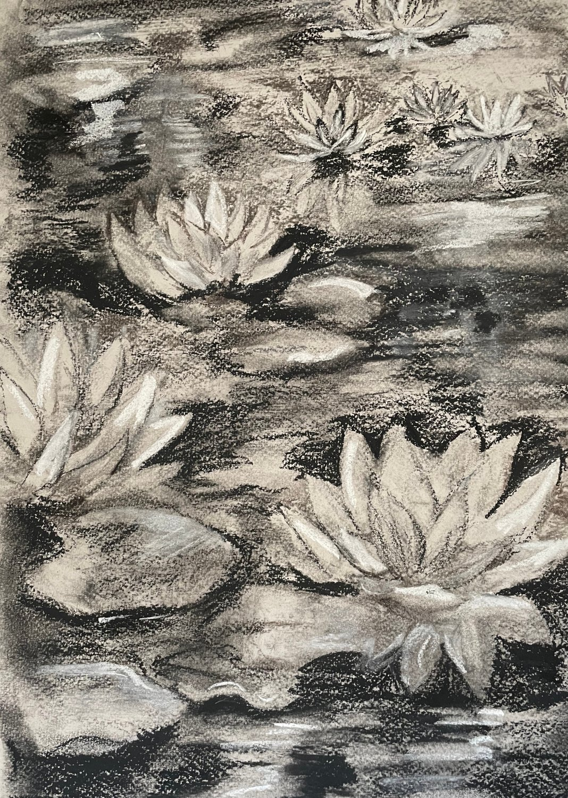
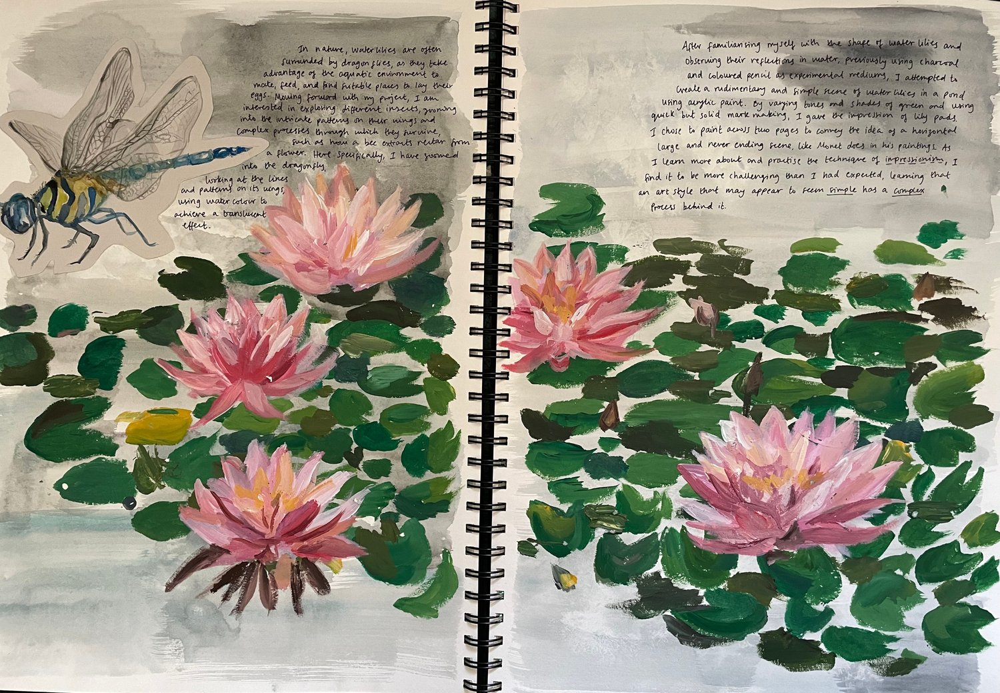
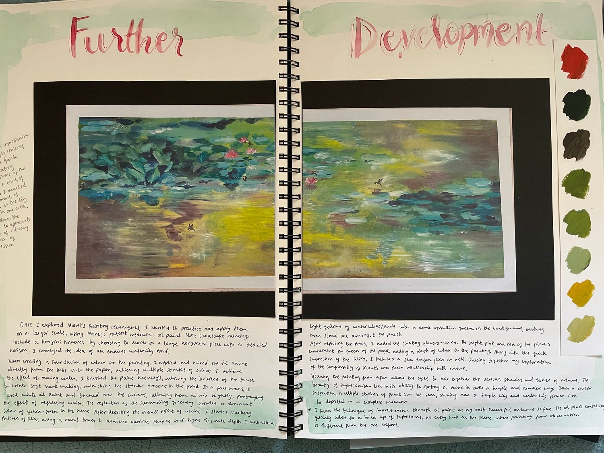
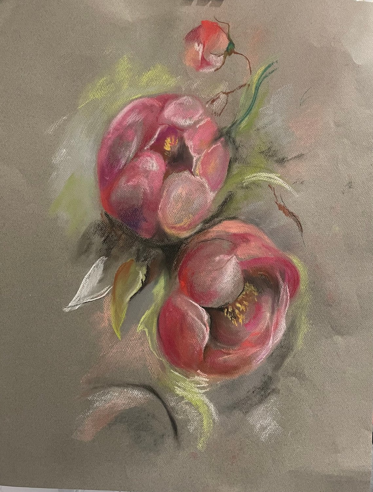
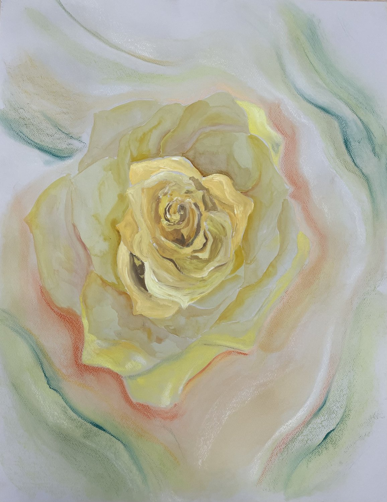
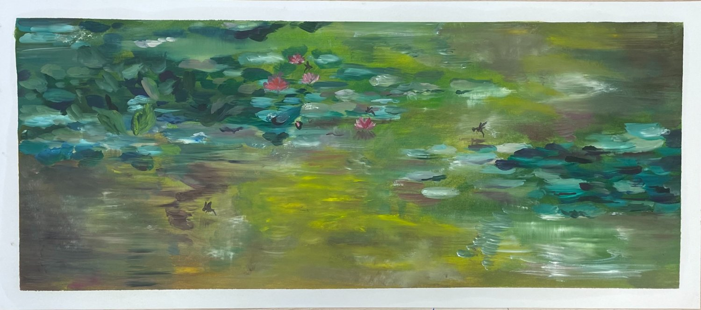

A body of work exploring simplicity and complexity in nature — from a Monet water lily deconstruction to a final piece. Part of the Visual Art portfolio →
My project explored "Simple or Complex" through subject and medium. The intricate and detailed acrylic rose and swallowtail butterfly paintings alongside impasto flower bushes creates a contrast between complexity and simplicity, further illustrated through the artistic medium of realism and impressionsim.









